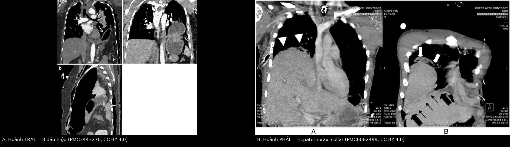
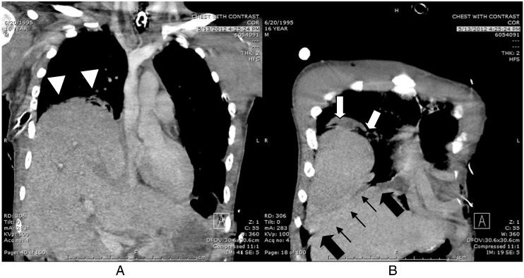
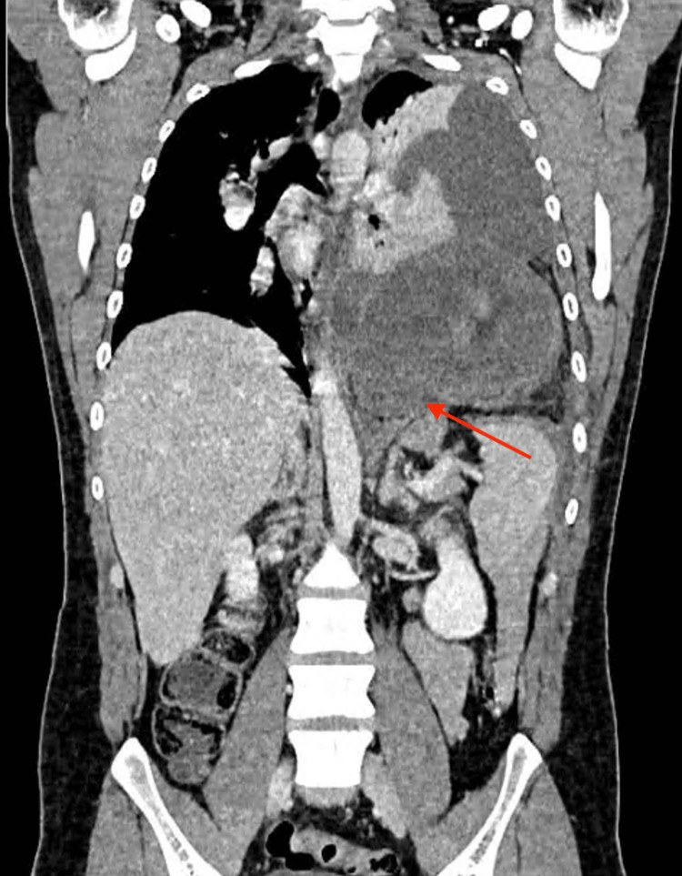

3082 — Vỡ cơ hoành sau chấn thương: dấu "cổ áo", "tạng tựa lưng" và bên PHẢI dễ bỏ sót
Tags: pattern:chan-thuong pattern:vo-co-hoanh pattern:thoat-vi-tang pattern:collar-sign pattern:hepatothorax vung:co-hoanh vung:long-nguc vung:o-bung anatomy:co-hoanh score:AAST protocol:CT-chan-thuong protocol:laparoscopy
Mức chắc chắn (certainty): tổng hợp y văn (literature synthesis) — ghép loạt 35 ca vỡ cơ hoành ba trung tâm (Turk Gogus Kalp Damar Cerrahisi Derg 2025, PMC12728965), ca vỡ hoành HAI BÊN 16 tuổi bị bỏ sót bên phải qua 3 lần CT (Trauma Case Rep 2015, PMC6082499), ca thoát vị dạ dày muộn 4 năm sau vết đâm, hoại tử dạ dày (Cureus 2026, PMC13160381) và tổng quan CT chấn thương ngực mô tả đủ 3 dấu hiệu (Insights Imaging 2012, PMC3443276). Không có ca do nhóm tự chụp.
Câu hỏi thực hành: nam 16 tuổi, tai nạn ô tô lật nhiều vòng; X-quang thấy dạ dày nằm trong ngực trái, mổ ngay vá hoành trái. Sau mổ thở máy kéo dài, X-quang hằng ngày "bất thường bên phải nhưng không đặc hiệu"; 3 lần CT đều không báo vỡ hoành phải. Câu hỏi: vì sao bên phải bị bỏ sót, dấu nào trên CT phải tìm, và khi nào cần nội soi ổ bụng chẩn đoán? Bài chốt ba quyết định: (1) vỡ hoành trái 80–90% nhưng bên PHẢI mới là bên bị bỏ sót — CT chỉ nhạy 50–83% bên phải so với 78–100% bên trái; (2) ba dấu chốt là mất liên tục cơ hoành có bờ cuộn, dấu "cổ áo" (collar) và dấu "tạng tựa lưng" (dependent viscera); bên phải thêm "hepatothorax", "hump", "band"; (3) chẩn đoán sớm thì mổ ngay bằng đường bụng; phát hiện muộn thì đường ngực/nội soi lồng ngực — chờ vì "chưa có thoát vị" là chờ hoại tử tạng.
1. Tổng quan bệnh học – cơ chế hình ảnh: vì sao TRÁI nhiều mà PHẢI khó thấy
- Tần suất – ba con số khác nhau vì ba mẫu số khác nhau: 0,4–1,5% trong toàn bộ chấn thương ngực; 0,8–7% ở bệnh nhân chấn thương kín nhập viện (PMC3443276); 8% chấn thương kín năng lượng cao và 10–15% chấn thương xuyên thấu (PMC12728965). Bỏ sót/ chẩn đoán muộn 9–41% (PMC12728965).
- Bên nào: trái 80–90% (PMC12728965), tương ứng 2/3–3/4 trong tổng quan CT (PMC3443276); trong loạt 35 ca, trái 62,9% tổng thể nhưng 85% ở nhóm chấn thương kín (PMC12728965).
- TẠI SAO trái nhiều: nửa phải cơ hoành nằm dưới gan — gan vừa hấp thu lực, vừa là "nắp chặn" nên lỗ rách nhỏ bên phải không đủ để gan chui lên. Hệ quả ngược lại: khi gan đã chui lên được thì lỗ đã rất lớn, và trước đó hình ảnh gần như bình thường. Đây là lý do CT bên phải chỉ nhạy 50–83% so với 78–100% bên trái (PMC3443276).
- TẠI SAO vỡ: (1) tăng áp lực ổ bụng đột ngột khi ngực bị ép → lực đẩy tạng lên vùng cơ hoành yếu nhất (phần sau–bên, nơi ống màng phổi–phúc mạc đóng muộn); (2) lực xé (shear) giữa phần cơ hoành di động và phần dính vào khung sườn/cột sống khi giảm tốc. Vì vậy vỡ hoành gần như luôn kèm đa chấn thương: 92% có tổn thương tạng kèm ở nhóm chấn thương kín (PMC12728965), hay gặp lách, gan, phổi, gãy sườn dưới (PMC3443276).
- TẠI SAO thở máy áp lực dương che dấu chẩn đoán: áp lực trong lồng ngực dương đẩy ngược tạng xuống; chỉ khi giảm áp lực/ cai máy thì chênh áp bụng–ngực mới đủ để tạng chui lên. Ca PMC6082499 chẩn đoán muộn đúng trong bối cảnh thở máy kéo dài — đây là cạm bẫy cơ chế, không phải lỗi đọc phim đơn thuần.
- TẠI SAO ba dấu hiệu lại xuất hiện:
- Mất liên tục cơ hoành + bờ cuộn (club-shaped edge): cơ rách co về hai phía, đầu cơ dày lên như "gậy đánh gôn" — thấy rõ nhất trên dựng ảnh coronal/sagittal.
- Collar sign ("cổ áo"): tạng chui qua lỗ hẹp bị thắt eo tại chỗ đi qua cơ hoành; dấu này cũng là dấu hiệu nguy cơ hoại tử vì lỗ chật.
- Dependent viscera sign ("tạng tựa lưng"): bình thường cơ hoành nằm giữa tạng bụng và phổi; khi rách, tạng tựa trực tiếp vào thành ngực sau — trên CT thấy tạng chạm thành ngực phụ thuộc, không có phổi/cơ hoành chen giữa.
- Con số vận hành: trong loạt 35 ca, đường kính lỗ rách trung vị 5,7 cm (chấn thương kín) và 4,04 cm (xuyên thấu); biến chứng 40%, tử vong 5,7%, nằm viện 4–16 ngày (PMC12728965). CT chẩn đoán trước mổ chỉ 56% — nghĩa là gần một nửa được phát hiện trong mổ (PMC12728965).
2. Mẫu hình + chẩn đoán phân biệt theo vị trí (gamut)
- Theo bên và vị trí lỗ:
- Trái sau–bên: hay gặp nhất; tạng chui lên là dạ dày, đại tràng, mạc nối, lách, ruột non.
- Phải sau–bên: gan chui lên (hepatothorax); hình ảnh tinh tế, dễ đọc thành "vòm hoành cao" hoặc "tràn dịch".
- Hai bên: hiếm; bên phải thường bị bỏ sót khi đang mổ bên trái — 3/5 ca vỡ hai bên trong y văn cũng bị bỏ sót như vậy (PMC6082499).
- Giữa/ trước (central tendon, Morgagni): hiếm sau chấn thương, dễ nhầm thoát vị bẩm sinh.
- Theo mẫu hình trình bày:
- Cấp – có thoát vị rõ: dạ dày/đại tràng trong ngực, mức khí–dịch, trung thất lệch.
- Cấp – không thoát vị: chỉ mất liên tục cơ hoành ± máu tụ quanh cơ hoành — dễ bỏ nhất.
- Muộn – tạng đã chui lên từ lâu: khó thở, đau bụng, xoắn/ hoại tử dạ dày (ca PMC13160381: vết đâm 4 năm trước, vào viện vì đau thượng vị 4 ngày, CT thấy dạ dày trong ngực, mổ vì hoại tử dạ dày).
- "Bịt kín" bởi tạng: lỗ rách bị gan/lách bít tạm → không có thoát vị, không có khí tự do, hình ảnh gần bình thường.
3. Bảng so sánh phân biệt (ma trận đối chiếu)
| Thực thể | Hình ảnh điển hình | Chốt vào (rule-in) | Chốt loại (rule-out) | Gợi ý xác nhận |
|---|---|---|---|---|
| Vỡ cơ hoành do chấn thương | Mất liên tục cơ hoành + bờ cuộn; collar sign; dependent viscera sign; tạng trong ngực | Chấn thương năng lượng cao + mất liên tục cơ hoành trên ≥ 2 bình diện + tạng tựa thành ngực sau | Cơ hoành liên tục trên đủ 2 bình diện + không tạng lạc chỗ → loại (nhưng không loại trừ được nếu chỉ 1 bình diện) | CT dựng coronal + sagittal; nội soi ổ bụng khi còn nghi |
| Vỡ hoành PHẢI (hepatothorax) | Gan trong ngực, hump sign (vòm gan đội lên), band sign, collar sign, mất vòm hoành phải | Mất liên tục cơ hoành phải + gan tựa thành ngực sau + mất "dấu cơ hoành liên tục" | Vòm hoành phải liền, không dải mô bất thường → loại | 3 lần CT vẫn có thể bỏ sót → nội soi ổ bụng chẩn đoán (PMC6082499) |
| Giãn cơ hoành (eventration) | Vòm hoành cao, liên tục, mỏng nhưng không đứt; tạng ở dưới | Cơ hoành còn liền, mỏng đều, không collar sign | Có mất liên tục hoặc collar → loại | So sánh 2 thì hô hấp; MRI khi không rõ |
| Thoát vị hoành bẩm sinh (Bochdalek/ Morgagni) | Lỗ sau–bên (trái) hoặc trước–trong (phải), bờ lỗ nhẵn, không dập | Bờ lỗ nhẵn + không dấu chấn thương + phát hiện tình cờ | Bờ rách dập, có máu tụ, bối cảnh chấn thương → loại | CT; tiền sử; đối chiếu phim cũ |
| Thoát vị hoành – thực quản (hiatal hernia) | Dạ dày qua lỗ thực quản, trên cơ hoành liền | Dạ dày quanh lỗ thực quản + cơ hoành liền | Cơ hoành đứt ở phần cơ → loại | CT coronal; nội soi tiêu hóa |
| Xoắn dạ dày (gastric volvulus) | Dạ dày căng, mức khí–dịch lớn, có thể ở trong ngực | Dạ dày xoay quanh trục + căng + không thoát được | Dạ dày vị trí bình thường → loại | CT; đây là biến chứng của vỡ hoành, không phải chẩn đoán thay thế |

Trái (A): vỡ hoành trái — tạng chui lên, bờ cơ hoành cuộn, dấu collar và dependent viscera (dựng coronal a, sagittal b, coronal c). Phải (B): vỡ hoành phải — hepatothorax (đầu mũi tên), hump (mũi tên trắng), collar (mũi tên đen), band (đường mũi tên); ca này 3 lần CT đều không báo. Hai bệnh nhân khác nhau ở hai bài khác nhau. Nguồn: Insights Imaging 2012 PMC3443276 + Trauma Case Rep 2015 PMC6082499, đều CC BY 4.0. Ảnh ghép letterbox, không crop.4. Protocol chụp – phân độ AAST – quy trình điều trị
4.1 Chụp gì, đọc gì
- CT ngực–bụng cản quang, lát 1–2 mm, bắt buộc dựng coronal + sagittal: phần lớn lỗ rách nằm sau–bên, gần như song song mặt phẳng axial nên chỉ thấy trên dựng ảnh (PMC3443276).
- Không dùng X-quang để loại trừ: độ nhạy chỉ 17% bên phải và 27–60% bên trái (PMC3443276). X-quang âm tính không loại trừ.
- Đọc theo 5 bước: (1) vòm hoành hai bên có liên tục không; (2) bờ cơ hoành có dày/cuộn; (3) tạng bụng có chạm thành ngực sau; (4) collar sign tại lỗ; (5) bên phải: vòm gan có "hump", có band bất thường, mất dấu cơ hoành liên tục.
- Nội soi ổ bụng chẩn đoán khi CT không kết luận nhưng cơ chế + tổn thương tạng kèm gợi ý mạnh — ca PMC6082499 chẩn đoán xác định bằng nội soi ổ bụng ngày 17, thấy gan trong ngực.
- Siêu âm tại giường (POCUS) có vai trò khi bệnh nhân không đi CT được: quai ruột nằm sát nhu mô phổi, mất đường hoành — hữu ích nhưng phụ thuộc người làm.
4.2 Phân độ AAST cơ hoành (2018) và ý nghĩa thực hành
| Độ | Mô tả | Ý nghĩa |
|---|---|---|
| I | Đụng dập cơ hoành | Thường không cần can thiệp |
| II | Rách < 2 cm | Vá thì đầu; nếu bỏ sót dễ thành thoát vị muộn |
| III | Rách 2–10 cm | Vá; phần lớn ca chấn thương kín rơi vào nhóm này |
| IV | Rách > 10 cm, mất mô ≤ 25 cm² | Cân nhắc lưới/ tái tạo nếu không đóng được không căng |
| V | Mất mô > 25 cm² | Tái tạo phức tạp, nguy cơ thoát vị tái phát cao |
- Lỗ rách trung vị đo được trên mổ: 5,7 cm (kín) và 4,04 cm (xuyên thấu) (PMC12728965) → phần lớn là độ III.
- Khâu không tiêu là chuẩn; trong loạt 35 ca tất cả được vá thì đầu bằng chỉ không tiêu, không dùng lưới (PMC12728965).
4.3 Đường mổ và thời điểm
| Tình huống | Đường vào | Lý do |
|---|---|---|
| Cấp, nghi tổn thương tạng bụng | Mở bụng (hoặc nội soi ổ bụng) | 92% có tổn thương tạng kèm (PMC12728965); vá hoành từ dưới dễ hơn |
| Cấp, chỉ tổn thương hoành, bệnh nhân ổn định | Nội soi ổ bụng | Ít xâm lấn, vẫn đánh giá được cả hai bên hoành |
| Muộn, tạng đã dính/ hoại tử trong ngực | Mở ngực hoặc nội soi lồng ngực | Gỡ dính, xử lý tạng hoại tử, vá từ trên |
| Vỡ hai bên | Mở bụng (đánh giá cả hai) | Bên phải dễ bị bỏ sót khi chỉ mổ bên trái (PMC6082499) |
- Thời điểm: mổ ngay khi chẩn đoán ở thể cấp — trong loạt 35 ca, 74,2% mổ trong ngày nhập viện (PMC12728965). Chờ đợi "vì chưa có thoát vị" là sai: lỗ rách không tự liền và tạng có thể chui lên bất kỳ lúc nào, kể cả 4 năm sau (PMC13160381).
- Cạm bẫy thở máy: đặt áp lực dương có thể che mất thoát vị; trước khi kết luận "hoành bình thường", cần hạ áp lực/ thử nghiệm cai máy hoặc chụp lại khi giảm áp lực (PMC6082499).
- Sau mổ: theo dõi thoát vị tái phát (đặc biệt độ IV–V), tắc ruột sớm, và tràn dịch/ dày màng phổi bên vá.
flowchart TD
A["Chấn thương ngực-bụng năng lượng cao"] --> B["CT 1-2 mm + dựng coronal và sagittal"]
B --> C{"Mất liên tục cơ hoành, collar, dependent viscera?"}
C -->|"Có"| D{"Cấp hay muộn?"}
C -->|"Không rõ, còn nghi"| E["Nội soi ổ bụng chẩn đoán"]
E -->|"Xác định vỡ"| D
E -->|"Không thấy"| F["Theo dõi, chụp lại sau giảm áp lực thở máy"]
D -->|"Cấp"| G["Mở bụng hoặc nội soi ổ bụng, vá chỉ không tiêu"]
D -->|"Muộn"| H["Mở ngực hoặc nội soi lồng ngực, gỡ dính + xử lý tạng"]
G --> I["Kiểm tra cả hai bên hoành"]
H --> J["Tái tạo lưới nếu mất mô nhiều"]
I --> K["Theo dõi tái phát, tắc ruột"]
J --> K
5. Biến thể bình thường và cạm bẫy
- Bên phải là bẫy số một: 3 lần CT liên tiếp không báo vỡ hoành phải dù có hepatothorax + hump + band + collar (PMC6082499). Nếu cơ chế mạnh + tổn thương lách/ gan/ sườn dưới, phải chủ động tìm các dấu này và không chấp nhận câu "không thấy bất thường".
- "Vòm hoành cao" không phải chẩn đoán: giãn cơ hoành, liệt hoành do tổn thương thần kinh hoành, vòm gan cao bẩm sinh đều cho hình ảnh tương tự; phân biệt bằng cơ hoành còn liền và không có collar.
- Thở máy làm mất dấu: như trên — giảm áp lực rồi chụp lại.
- Bỏ sót thứ hai khi đã tìm thấy một (satisfaction of search): thấy dạ dày trong ngực trái rồi dừng lại → bỏ bên phải. Luôn đọc cả hai bên hoành trước khi kết thúc.
- Tràn dịch/ tràn khí "không giải thích": tạng trong ngực có thể gây tràn dịch phản ứng hoặc tràn khí do thủng tạng; đừng chỉ đặt dẫn lưu rồi theo dõi.
- Biến thể bình thường dễ nhầm: thùy gan phụ/ rãnh gan sâu và mỡ dưới hoành có thể tạo "dải" giả trên CT; thoát vị Bochdalek người lớn (0,17% CT bụng) có bờ lỗ nhẵn — khác bờ rách dập sau chấn thương.
- Muộn: đừng quên xoắn/ hoại tử — ca PMC13160381 mổ vì hoại tử dạ dày; hỏi triệu chứng tiêu hóa ở bệnh nhân có "bất thường hoành cũ".
6. Tự lượng giá — Blind Quiz
Ca 1 — Nam 16 tuổi, tai nạn ô tô lật; CT ngực–bụng sau mổ vá hoành trái. Có gì bất thường bên phải?

- Gợi ý: bệnh nhân thở máy kéo dài; X-quang hằng ngày "bất thường phải nhưng không đặc hiệu".
- Hỏi: mô tả 4 dấu hiệu trên ảnh? Vì sao 3 lần CT trước đó không báo?
Bấm để hiện đáp án
- A (coronal): gan chui lên ngực phải — hepatothorax (đầu mũi tên); B (sagittal): hump sign (mũi tên trắng), collar sign (mũi tên đen), band sign (đường mũi tên).
- Vì sao bỏ sót: vỡ hoành phải nhỏ, bị gan bịt; thở máy áp lực dương đẩy tạng xuống; lỗ rách chỉ song song mặt axial nên không thấy nếu không dựng sagittal.
- Xác định: nội soi ổ bụng ngày 17 thấy gan trong ngực → mổ vá.
- Nguồn: Trauma Case Rep 2015, PMC6082499, CC BY 4.0.
Ca 2 — Nam 25 tuổi, vết đâm ngực trái 4 năm trước, nay đau thượng vị 4 ngày, nôn. Chẩn đoán và vì sao phải mổ cấp?

Bấm để hiện đáp án
- Dạ dày (thân + phình vị + phần hang) nằm trong ngực trái qua lỗ hoành nhỏ (mũi tên), phổi trái xẹp, tràn dịch cùng bên.
- Chốt vào: tiền sử xuyên thấu + tạng trong ngực + triệu chứng tắc/ xoắn → thoát vị hoành muộn biến chứng, không phải "đau dạ dày".
- Trong ca này dạ dày đã hoại tử → mổ cấp; lỗ rách chỉ ~2 cm vẫn đủ gây xoắn và hoại tử.
- Nguồn: Cureus 2026, PMC13160381, CC BY 4.0.
Ca 3 — Hai bệnh nhân vỡ hoành trái và phải: dấu nào giúp phân biệt, và dấu nào báo nguy cơ hoại tử?
Bấm để hiện đáp án
- Trái (A): tạng chui lên rõ, bờ cơ hoành cuộn, collar + dependent viscera.
- Phải (B): hepatothorax, hump, collar, band — không có "dạ dày trong ngực" để dễ nhận ra.
- Collar sign là dấu báo tạng bị thắt tại lỗ hẹp → nguy cơ xoắn/ hoại tử, cần mổ sớm.
- Nguồn: Insights Imaging 2012 PMC3443276 + Trauma Case Rep 2015 PMC6082499, CC BY 4.0.
Bài liên quan chéo
- 3083 – Chấn thương khí–phế quản do lực tù (cùng cơ chế giảm tốc)
- 080 – Chấn thương ngực kín (đọc CT theo tầng, AAST)
- 045 – Thành ngực & thoát vị hoành (Bochdalek người lớn, dấu ngoài màng phổi)
- 608 – Theo dõi sau mổ thoát vị hoành bẩm sinh (thoát vị hoành ở trẻ)
- 1776 – Bệnh cơ hoành do thở máy (giảm áp lực, cai máy)
- 162 – Tắc ruột (biến chứng thoát vị nghẹt)
Ảnh
- File:
3082_vch_CT_PMC3443276-F21.jpg,3082_vch_CT_PMC6082499-F2.jpg,3082_vch_CT_PMC13160381-F1.jpg,composite_3082_trai-phai.jpg. Nguồn + giấy phép từng ảnh trongimages/CREDITS.md.
Không dùng để chẩn đoán độc lập khi chưa có người hướng dẫn.